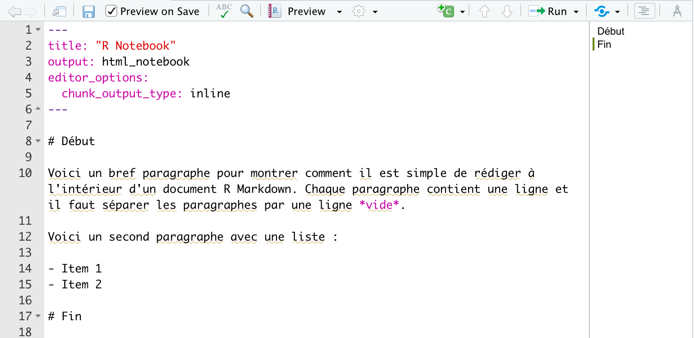
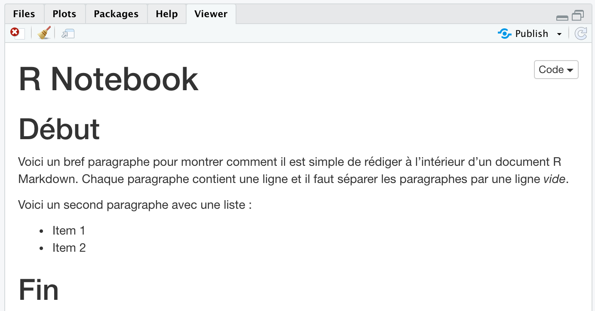
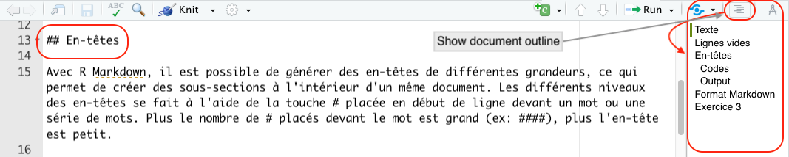
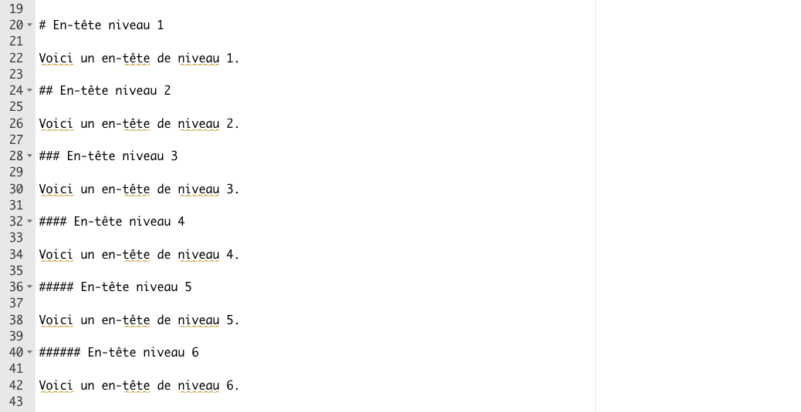
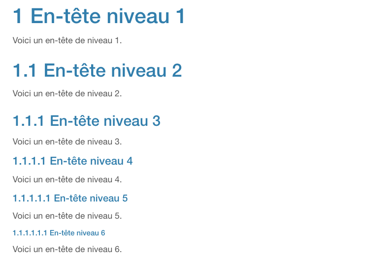
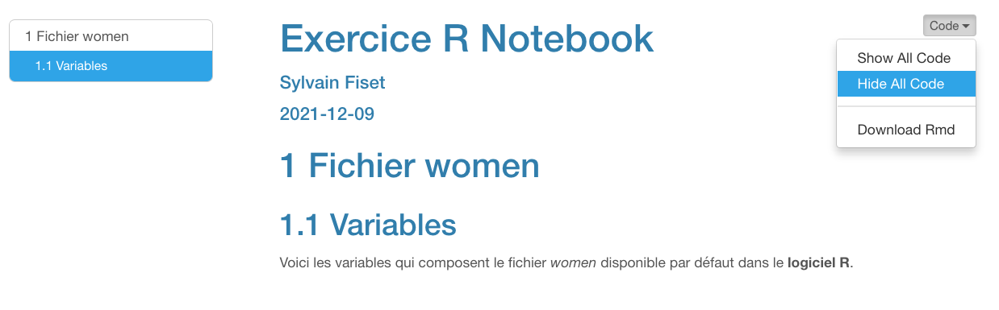

10 Le texte
Les fichiers R Notebook se caractérisent par la faciliter avec laquelle du texte peut être intégré autour des blocs de codes qui produisent les résultats des différentes analyses statistiques produites avec R. Ce texte est ajouté directement dans la fenêtre Source de RStudio sous les Métadonnées.
Puisqu’il est possible d’insérer du texte autour des blocs de codes, l’analyste peut facilement documenter toutes les étapes de ses analyses statistiques et y présenter ses interprétations. De cette façon, il/elle peut reprendre une analyse produite quelques mois ou années auparavant et reproduire les résultats et les conclusions tirées à l’époque.
Tel que mentionné précédemment, les fichiers R Notebook utilisent le langage Markdown. Ce langage est très flexible et permet de formater un document très facilement. Dans ce chapitre, je présente quelques petits trucs et options qui doivent être maîtrisés lorsque nous utilisons le langage Markdown. Mais pour avoir une vue détaillée de ce langage, je vous encourage fortement à consulter le document résumé du langage rmarkdown.
10.1 Exemple
L’écriture du texte à l’intérieur d’un document R Notebook diffère légèrement de l’écriture d’un texte avec un logiciel spécialisé de traitement de texte (ex : Microsoft Word ou LibreOffice). La Figure @ref(fig:nb711) montre l’écriture de texte dans un document R Notebook à l’aide du langage R Markdown et la Figure @ref(fig:nb712) montre le résultat, en format HTML.

10.2 Lignes vides
Avec le langage Markdown, il ne faut pas coller les paragraphes les uns sur les autres. En fait, il est préférable de séparer les paragraphes, les blocs de codes et les en-têtes avec une ligne vide placée au-dessus du paragraphe, du bloc de codes ou de l’en-tête et une ligne vide placée en-dessous du paragraphe, du bloc de codes ou de l’en-tête. Cela vous évitera bien des petits pépins… Je présente un exemple dans la Figure @ref(fig:nb7).
10.3 En-têtes
Avec R Markdown, il est possible de générer des en-têtes de différentes grandeurs, ce qui permet de créer des sous-sections à l’intérieur d’un même document. Les différents niveaux des en-têtes se fait à l’aide de la touche # placée en début de ligne devant un mot ou une série de mots (voir Figure @ref(fig:nb71)). Plus le nombre de # placés devant le mot est grand (ex: ####), plus l’en-tête est petit.
Je suggère d’utiliser de noms d’en-têtes très brefs, soit de un, deux ou trois mots. Cela aide le déroulement de la table des matières dans le document HTML et facilite la navigation. De plus, cela aide la navigation dans la table des matières à l’intérieur du fichier R Notebook lorsque l’option Show document outline est activée (touches Shift+Cmd+O avec Mac). Je recommande d’ailleurs l’utilisation de cet affichage pour se déplacer à l’intérieur de la fenêtre Source d’un fichier R Notebook (voir Figure @ref(fig:nb71)).

10.3.1 Codes
Voici un exemple de codes d’en-têtes avec le langage R Markdown. Vous remarquerez qu’il y a une ligne vide avant et une ligne vide après chaque en-tête. Dans la Figure @ref(fig:nb7), les lignes 19, 21, 23, 25, etc., sont vides. Comme je le mentionnais précédemment, ces lignes vides sont importantes pour éviter que les lignes se combinent dans le document final. Par exemple, en l’absence de la ligne vide, l’en-tête et le texte situé juste en-dessous se collent ensembles. Dans l’exemple de la Figure @ref(fig:nb7), ce problème produirait quelque chose comme En-tête niveau 1Voici un en-tête de niveau 1.## En-tête niveau 2Voici un…, ce qui, vous en conviendrez, est plutôt difficile à lire.

10.3.2 Output
La Figure @ref(fig:nb8) illustre le document final en format R Notebook, lequel fut produit à partir du langage R Markdown. Nous voyons que plus le nombre de # augmente, plus la grosseur du lettrage de l’en-tête est réduite. En fait, avec l’en-tête de grosseur 6, nous remarquons que le texte du document est plus gros que celui de l’en-tête ! Aussi, en raison du fait que nous avons ajouté l’option number_sections: yes aux métadonnées, nous voyons que chaque en-tête est précédé d’un numéro qui est de plus en plus petit.

10.4 Format Markdown
Il est possible de modifier le format du texte avec R Markdown. Voici quelques exemples1.
- L’italique peut être créé en entourant le texte par des traits soulignés (
_texte_= texte) ou des astérisques (*texte*= texte). - Le gras peut être obtenu en plaçant deux astériques avant et après le texte (
**texte**= texte). - Les exposants à l’aide de deux chapeaux ^ (
2^2^= 22). - Les indices avec deux tildes ~ (
T~2~= T2). - Une ligne verticale à l’aide de trois étoiles placées seules en début de ligne (
***). - Une citation à l’aide du signe > placé en début de paragraphe (
> citation). - Une liste à puces (comme dans Word) en plaçant un tiret (
- liste) ou un astérisque (* liste) en début de paragraphe. Assurez-vous de laisser un espace entre le tiret et le mot. - Une liste numérotée en plaçant 1., 2., 3., etc. au début de chaque ligne qui compose la liste (
1. Liste numéro 1). Pour d’autres exemples, cliquez ici - Il est aussi possible de créer une liste numérotée continue pour l’ensemble du document en plaçant simplement (@) au début de chaque ligne qui compose la liste continue (
(@) liste 1). Malheureusement, la numérotation de la liste ne peut pas être interrompue et recommencée, comme c’est le cas avec l’approche précédente.
10.5 Exercice 3
L’objectif de cet exercice est d’apprendre à insérer des en-têtes et du texte à partir du langage R Markdown. Voici les instructions :
- Ouvrez le fichier Exercice Notebook.Rmd que vous avez créé lors de l’Exercice 2
- Sous les métadonnées, insérez des en-têtes et du texte tel que suggèré ci-dessous :
- Ajoutez un en-tête de niveau 1 :
Fichier women - Ajoutez un en-tête de niveau 2 :
Variables - Ajoutez la phrase suivante sous l’en-tête Variables :
Voici les variables qui composent le fichier women disponible par défaut dans le logiciel R
- Mettre en italique le mot women dans la phrase précédente
- Mettre en gras le mot logiciel R dans la phrase précédente
- Ajoutez un en-tête de niveau 1 :
- Sauvegardez votre fichier R Notebook
- Visualisez votre document final R Notebook en sélectionnant Preview
- Au besoin, apportez les correctifs pour qu’il ressemble à l’exemple ci-dessous :

Pour une liste exhaustive des options, voir la section Pandoc’s Markdown en cliquant ici↩︎